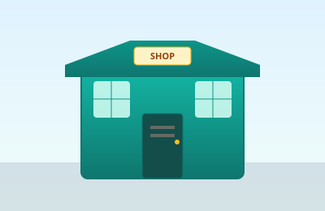
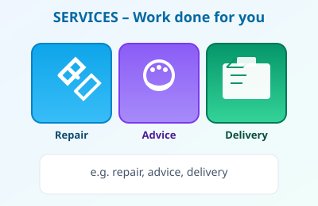
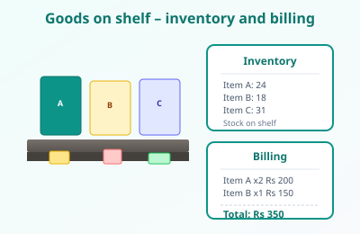
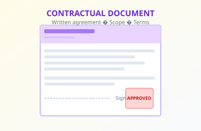

MODULE OVERVIEW: User Requirements for Software Solution (K72T001M01 / Level 05)
0 General and Specific Objectives
Module focus: Understand business processes of selected organisations, gather and analyse
user requirements, and evaluate the feasibility of proposed software solutions.
General Objective
At the end of this module, students will be able to understand and describe business processes of selected
organisations, gather and analyse user requirements, and evaluate the feasibility of proposed software
solutions.
Specific Objectives
At the end of this module the student shall be able to:
Explain the business processes of a selected domain.
Prepare and present a requirement analysis report of the selected project.
Prepare and present a feasibility study report of the selected project.
MODULE 1: User requirements for software solution
1 Introduction to Business & Business Process
Learning focus: Definition of business, business process, Input→Process→Output model, Sri Lankan examples (tea shop, mobile shop).
Definition of Business
Business is any organisation or activity that provides goods or services to customers in exchange for money or other value. The aim is usually to make a profit.
A business does something useful for people and gets paid. Customers buy from it. The money left after costs is profit. It can be small (tea shop) or big (company).
A business process is linked steps: inputs → process → outputs. Same steps each time = consistent and efficient.
Like a recipe: you have things at the start (inputs), you do steps (process), you get something at the end (output). Example: tea leaves + order → make tea → cup of tea + payment. Same steps each time = same quality.
Input → Process → Output Model
Input → Process → Output
Examples from Sri Lanka
Tea shop (kade): Input = order + tea/sugar/milk; Process = boil, mix, pour; Output = cup of tea + payment.
Mobile shop: Input = customer + phone/cash; Process = show phones, explain, take payment, hand over; Output = sold phone + money.

Example: A small shop (goods and service)
Questions
What is the difference between a business and a hobby?
Give one example of input, process, and output for a tea shop.
Activity
Draw a simple business process (with 4–5 steps) for a mobile shop. Label inputs and outputs.
2 Types of Business Processes
Learning focus: Core, support, and management processes; example in a supermarket; group discussion.
Core Processes
Core = main work that creates value and revenue (e.g. selling, making food, repair).
Core = the work the customer sees and pays for (e.g. selling a phone, making tea). No core work = no money in.
Support Processes
Support = behind the scenes (stock, cleaning, bills, IT). Needed so core can work.
Support processes are the work that happens behind the scenes. The customer does not buy “cleaning” or “stock keeping”, but the business needs them. If the shop is dirty or has no stock, the core process (selling) cannot work well.
Management = the owner or manager plans and decides (what to sell, price, who works when). They don’t serve the customer directly but their decisions affect the whole business.
Example in a Supermarket
Core: Billing at checkout, restocking shelves (visible to customer).
Support: Receiving goods from suppliers, cleaning, security.
Why is billing a core process and cleaning a support process?
Name one management process in a small shop.
Activity
Group discussion: List core, support, and management processes for a supermarket. Compare with another group.
3 Business Domains Overview
Learning focus: Business domain, public vs private sector, service vs manufacturing, ICT in domains.
What is a Business Domain?
A business domain is the industry or area: telecom, hotels, health, transport, retail, education.
“Domain” here means the type of business or industry. Telecom domain = companies like Dialog and Mobitel. Health domain = hospitals and clinics. Education domain = schools and institutes. When we say “hotel domain” we mean the hotel industry and the way hotels work.
Public vs Private Sector
Public = government-run (state hospitals, railways). Private = run by companies or individuals (Dialog, private schools).
Government runs it = public (e.g. state hospital). A person or company runs it for profit = private (e.g. private clinic, Dialog).
Service vs Manufacturing
Service = labour/expertise (telecom, hotels). Manufacturing = physical products (factories). Many do both.
When you buy a thing you can touch (soap, phone, rice), that is from manufacturing or selling goods. When you pay for someone to do something for you (haircut, room for a night, doctor’s check-up), that is a service. A mobile shop sells goods (phones) and may also give a service (repair).

Services: work done for you (e.g. repair, advice, delivery)
ICT Involvement
ICT in every domain: billing, booking, patient records, POS, LMS—faster work, less error, data in one place.
ICT = computers, software, internet. Shops use it to bill; hospitals for patient records; schools for grades. It makes work faster and keeps data in one place.
Questions
Is a government hospital in the public or private sector?
Give one example of ICT used in the education domain.
Activity
List three business domains and one main process for each. Mark whether each is mainly service or manufacturing.
In Sri Lanka, telecom operators like Dialog and Mobitel provide mobile voice, data, and value-added services. Their main processes include selling SIMs, recharging, customer care, and network management.
Telecom gives you a SIM to call and use the internet. You can add money (recharge) when balance is low. Buy SIM or recharge = part of their business process.
SIM Registration Process
Customer visits outlet with NIC → Staff verifies ID → Form filled → Data entered in system → SIM activated → Hand over to customer.
You must show your National Identity Card (NIC) when you buy a new SIM. The shop checks your ID, fills a form, and enters your details in the company’s computer. Then the SIM is activated and given to you. This is done for security and to follow the law.
Recharge Process
Customer gives mobile number and amount → Cash/card payment → System credits balance → Receipt/SMS confirmation.
To recharge: give your number and amount, pay by cash or card. The system adds the amount to your number. You get a receipt or SMS. Same steps every time.
Stakeholders & Software
Stakeholders: customers, dealers, call centre, network team, regulator (TRC). Software: Billing system (recharges, usage), CRM (customer data, complaints).
Many are involved: you, the shop (dealer), call centre, network team, and regulator (TRC). The company uses a billing system for recharges and CRM for customer details and complaints.
Telecom: registration and recharge flow
Questions
Why is SIM registration required?
Name two software systems used in telecom.
Activity
Draw the recharge process (4–5 steps) and label who does each step.
5 Hotel Industry Domain
Learning focus: Booking, check-in/check-out, room management, hotel software.
Booking Process
Guest requests room (phone/online) → Check availability → Confirm rate and dates → Take payment or guarantee → Send confirmation (email/SMS).
You ask for a room (phone or online). Hotel checks if a room is free and tells you the price. You pay or give a guarantee; they send a confirmation. Booking done.
Check-in / Check-out
Check-in: Guest arrives → Verify booking and ID → Collect payment if not done → Assign room → Hand key/card. Check-out: Guest returns key → Settle extras → Print bill → Payment → Depart.
Check-in = you arrive, show booking and ID, get room and key. Check-out = you return the key, pay extras and final bill, then leave.
Room Management & Software
Room status (vacant/occupied/cleaning), housekeeping schedule, maintenance. Hotel software: Property Management System (PMS), booking engine, point-of-sale for restaurant/minibar.
Hotel tracks which rooms are empty, occupied, or being cleaned. They use PMS for bookings and billing. Restaurant and minibar may use a separate system to bill guests.
Questions
What is the main output of the check-in process?
Name one hotel software system.
Activity
List the steps of the check-out process in order. Identify one support process in a hotel.
6 Health Sector Domain
Learning focus: Patient registration, appointments, laboratory process, Hospital Information Systems (HIS).
Patient Registration
Patient arrives → Fill registration form → Enter details in system → Issue OPD card/ID → Direct to department or queue.
First time at hospital: you fill a form with your details. Staff enter it in the computer and give you an OPD card or ID. Then you go to the right department or queue for the doctor.
Appointment System
Patient or staff books slot (in person/phone/online) → System checks doctor availability → Confirms date/time → Reminder sent.
You can book a time to see the doctor (in person, phone, or online). The system checks when the doctor is free and gives you a date and time. Hospital may send a reminder.
Laboratory Process
Doctor requests test → Sample collected → Sent to lab → Lab performs test → Result entered in HIS → Doctor/patient views result.
When the doctor needs a blood test or other lab test, he or she orders it. Your blood or sample is taken and sent to the laboratory. The lab does the test and types the result into the hospital’s computer system (HIS). The doctor (and sometimes you) can then see the result on the screen.
Hospital Information Systems (HIS)
HIS supports registration, appointments, lab, pharmacy, billing, and patient records. It links departments and keeps data in one place.
HIS is the main hospital software. It is used for registration, appointments, lab results, pharmacy, billing, and patient records. One system for all departments instead of paper files.
Questions
What is the purpose of patient registration?
How does the laboratory process use HIS?
Activity
Draw a simple flow: from doctor’s test request to patient receiving the result.
Customer selects route and date → System shows availability and fare → Customer pays → Ticket (paper or e-ticket) issued → Customer travels on scheduled trip.
You choose route and date. The system shows if seats are free and the price. You pay and get a ticket (paper or e-ticket on phone). On the day, you show the ticket and travel.
Fleet Management
Managing vehicles: maintenance schedule, fuel, driver assignment, route planning. Ensures buses/trains run on time and are safe.
“Fleet” means all the buses or trains the company owns. Fleet management is the work of keeping them in good condition (maintenance), giving them fuel, assigning drivers, and planning routes. This helps trips run on time and keeps passengers safe.
GPS Tracking & E-ticketing
GPS shows vehicle location in real time (safety, delays). E-ticketing = digital ticket (app/email/SMS), no need for paper; reduces queues and fraud.
GPS shows where each bus or train is. Company can tell passengers about delays and improve safety. E-ticketing = ticket on your phone or email, no paper. Faster and less cheating.
Questions
Give two benefits of e-ticketing.
How does GPS help in transport?
Activity
List inputs and outputs of the ticket booking process. Suggest one improvement using ICT.
Tracking stock: what is in the warehouse and on shelves. Reorder when level is low. Reduces stock-outs and overstocking.
Inventory means “how much of each product we have”. The supermarket must know what is in the store and in the warehouse. When something is running low, they order more from the supplier. This way they do not run out of products (stock-out) and do not keep too much (overstocking).
You bring items to the checkout. Cashier scans (or types) each item. Computer adds the total. You pay by cash or card. Cashier prints a receipt and packs. That is the billing process.
Supplier Management & POS
Ordering from suppliers, receiving goods, checking quality and quantity. POS (Point of Sale) = system at checkout: scans barcode, applies prices, records sale, updates inventory.
Suppliers sell products to the supermarket. Supermarket orders, receives goods, and checks quality. POS = computer at checkout: reads barcodes, shows prices, records sale, updates stock.

Goods on shelf – inventory and billing
Questions
What does POS do at checkout?
Why is inventory management important?
Activity
Group discussion: List core, support, and management processes in a supermarket. Compare with Chapter 2.
9 Education Domain
Learning focus: Student registration, examination process, LMS, result processing.
Student Registration
Student submits form and documents → Office verifies → Data entered in system → Student gets ID and course schedule.
When you join a school or course, you fill a form and give documents (e.g. birth certificate, previous results). The office checks them and enters your details in the computer. You get a student ID and a schedule that shows your subjects and classes.
First the exam dates and times are announced. You get a hall slip that says which room you sit in. On the day you write the exam and hand in your answer script. Teachers mark the scripts, marks are entered in the system, and then results are published so you can see your grades.
LMS & Result Processing
LMS (Learning Management System) = online platform for courses, materials, assignments, grades. Result processing: marks from exams/assignments → entered/imported → grades calculated → transcripts and reports generated.
An LMS is an online system where you can see your courses, download materials, submit assignments, and check your grades. Result processing means: after exams, marks are entered (or imported) into the system, the system calculates grades and GPAs, and then it produces result sheets and reports.
Questions
What is an LMS used for?
Name three steps in the examination process.
Activity
Draw the student registration process (5 steps). Identify one ICT tool used in education.
People inside the organisation: owners, managers, employees. They run the business and are affected by its performance.
Internal stakeholders are the people who work inside the business. The owner owns it; the manager runs it; the employees do the day-to-day work. They all have an interest in the business doing well because their job and income depend on it.
External Stakeholders
Outside the organisation: customers (buy goods/services), suppliers (provide materials), government (laws, tax, regulations), banks, community.
External stakeholders are outside the business but are still affected by it or affect it. Customers buy from the business. Suppliers sell materials to the business. The government makes laws and collects tax. Banks may lend money. The local community is affected by the business (e.g. jobs, noise).
Stakeholder Responsibilities
Each has a role: customers pay and give feedback; suppliers deliver on time; government enforces rules; business must satisfy customers and comply with law.
Everyone has a role. Customers should pay and can give feedback. Suppliers should deliver good quality on time. The government makes sure rules are followed. The business should serve customers well and follow the law. When everyone does their part, the business can run smoothly.
Stakeholder relationship diagram
Questions
Who are internal and who are external stakeholders?
What is the government’s role as a stakeholder?
Activity
Draw a stakeholder diagram for a mobile shop. Label at least four stakeholders and their link to the business.
MODULE 2: Study of Business Processes
11 Understanding Current Systems
Learning focus: What is current system study, why analyse existing systems, real-world example.
What is Current System Study?
Current system study means studying how an organisation does its work today: processes, people, tools, and data. We look at what works well and what does not.
Before we change anything, we must understand how work is done now. We look at the steps people follow, who does what, what forms and tools they use, and what data they have. We also note what is slow, wrong, or wasteful. This is called studying the current system.
Why Analyse Existing Systems?
To find problems (delays, errors, waste), to design better processes or new software, and to avoid repeating the same mistakes. It is the first step before improvement or IT projects.
If we do not study the current system, we might build something that does not fit. We might repeat the same mistakes or miss real problems. By studying first, we know what to improve and what the new system must do.
Real-world Example
Before introducing a new billing system, we study: How does the shop bill now? Who does it? What forms are used? Where do errors happen? This study gives the basis for requirements.
Questions
Why do we study the current system before changing it?
Name two things we look at in a current system study.
Activity
Choose one process (e.g. school registration). List what you would observe and ask in a current system study.
Flowcharts use shapes (start/end, process, decision, arrow) to show steps and choices. Easy to read and good for simple processes.
A flowchart is a picture of a process. We use an oval for start and end, a rectangle for a step (e.g. “Take payment”), a diamond for a decision (e.g. “Cash or card?”), and arrows to show the order. Anyone can follow the flow and understand the process.
Swimlane Diagrams
Same as flowchart but each swimlane is one person or department. Shows who does which step. Reduces confusion in multi-role processes.
A swimlane diagram is like a flowchart split into rows or columns. Each row (or column) is one person or department—like “Cashier”, “Manager”. The steps are placed in the row of whoever does them. So you can see at a glance who does what.
BPMN Basics
BPMN (Business Process Model and Notation) is a standard. It has events (circle), activities (rounded rectangle), gateways (diamond), and flows. Used in professional tools.
BPMN is a set of rules and shapes used worldwide to draw business processes. Circles show events (e.g. “Order received”), rounded rectangles show activities (e.g. “Send confirmation”), diamonds show decisions or splits. Using the same symbols everywhere avoids confusion.
Simple flowchart: Start → Process → Decision → End
Questions
What is a swimlane used for?
Name two BPMN elements.
Activity
Draw a flowchart for “customer pays by cash or card” with a decision shape. Then add one swimlane for Cashier.
13 Identifying Process Problems
Learning focus: Bottlenecks, delays, manual errors, duplicate data entry.
Bottlenecks
A bottleneck is a step that slows down the whole process because capacity is limited (e.g. one cashier, one machine). Fix: add capacity or balance workload.
A bottleneck is like a narrow part of a bottle—everything has to pass through it, so it gets stuck. In a process, it is the step that everyone waits at. Example: only one cashier, so a long queue forms. To fix it we can add another cashier or make the step faster.
Delays
Delays = waiting time between steps (e.g. forms waiting for approval, queue at checkout). Reduce by simplifying steps or parallel work.
Delays are when work has to wait. For example forms wait for the manager’s approval, or customers wait in a queue. We can reduce delays by doing some steps in parallel (at the same time) or by removing unnecessary steps.
Manual Errors & Duplicate Entry
Manual errors = mistakes when typing or calculating. Duplicate data entry = same data entered more than once (waste and more errors). Solution: automate, validate, single source of data.
When people type or calculate by hand, they can make mistakes—wrong number, wrong name. “Duplicate entry” means the same information is typed in more than once (e.g. once at reception and again in the lab). That wastes time and increases errors. We can reduce this by using a single system where data is entered once and shared, and by using validation (e.g. the system checks that the value is allowed).
Questions
What is a bottleneck? Give one example.
How can duplicate data entry be reduced?
Activity
List three possible problems in a hospital registration process and suggest one improvement for each.
14 Stakeholder Role Analysis
Learning focus: Role identification, responsibility matrix (RACI), case study.
Role Identification
Identify who is involved in each process: by job title or role (e.g. Cashier, Manager, Customer). Clarifies who does what.
For each process we list the people (or roles) involved: for example Cashier, Manager, Customer. We do not always use real names—we use the role or job title. This makes it clear who does each step.
RACI Matrix
R = Responsible (does the work), A = Accountable (finally answerable), C = Consulted (asked for input), I = Informed (told of result). RACI table: rows = tasks, columns = roles; cell = R/A/C/I.
RACI is a simple way to say who is involved in each task. R = the person who does the work. A = the person who is finally answerable (usually one per task). C = people we ask for advice before deciding. I = people we just inform after. We draw a table: tasks in rows, roles in columns, and write R, A, C, or I in each cell.
Questions
What does R and A mean in RACI?
Why use a RACI matrix?
Activity
Case study: For “approve leave request”, assign R, A, C, I to Manager, Employee, HR. Discuss in group.
15 Data Flow in Business Process
Learning focus: What is data flow, DFD Level 0, data stores, practical example.
What is Data Flow?
Data flow = how data moves between processes, external entities (people/systems), and data stores. Shown in Data Flow Diagrams (DFD).
Data flow means “where does information go?” For example: the customer gives an order (data flows from customer to the process), the process saves it in a file (data flows to a data store), and the process sends a receipt (data flows back to the customer). We draw this in a Data Flow Diagram (DFD).
DFD Level 0
Level 0 (context diagram): one process in the centre, external entities (customer, supplier) and data flows in/out. No internal detail. Good for scope.
Level 0 DFD is the simplest picture. We draw one box in the middle for the whole system (e.g. “Library System”). Around it we draw the people or systems that send or receive data (e.g. Member, Librarian). Arrows show what data goes in and out. We do not show internal steps yet—just the big picture.
Data Stores
Data store = where data is kept (e.g. database, file). In DFD it is a rectangle open on two sides. Flows show data read from or written to the store.
A data store is a place where we keep data—like a database or a file. In the diagram we draw it as a rectangle with two short lines on the sides. Arrows show when data is written to the store (e.g. “Save booking”) or read from it (e.g. “Get member details”).
Questions
What does a data store represent in a DFD?
What is shown in a Level 0 DFD?
Activity
Draw a Level 0 DFD for “Library issue book”: one process, two external entities (Member, Librarian), and label two data flows.
Key Performance Indicators (KPIs) = numbers used to measure success (e.g. sales per day, number of complaints, on-time delivery %). Must be clear and measurable.
A KPI is a number we use to see if we are doing well. For a shop, examples are: sales per day, how many customers came, how many complaints we got. We must be able to measure it (count it or calculate it). If the number is good, we are on track; if not, we need to improve.
Productivity Metrics
Productivity = output per unit of input (e.g. bills per hour, orders per day). Helps compare periods or teams and find bottlenecks.
Productivity means how much we get done for the time or effort we put in. For example: how many bills per hour, or how many orders per day. When we measure this, we can compare different days or different staff and see where we are slow (bottleneck).
Customer Satisfaction
Measured by surveys, ratings, or repeat visits. High satisfaction usually means the process meets customer needs.
Customer satisfaction means whether customers are happy with our service or product. We can measure it by asking them (survey), by a rating out of 5, or by seeing if they come again. If satisfaction is high, our process is probably good; if low, we need to improve.
Questions
Give two examples of KPIs for a shop.
Why measure customer satisfaction?
Activity
Define two KPIs for a hospital OPD and say how you would collect the data.
Risks in day-to-day work: staff absent, machine breakdown, supplier delay. Can disrupt the process.
Operational risks are things that can go wrong in daily work. For example: a staff member is absent, a machine breaks, or a supplier is late. When these happen, the process can slow down or stop. We identify them so we can plan (e.g. backup staff, maintenance).
Financial Risks
Cash flow, cost overrun, fraud, bad debt. Affect profit and sustainability.
Financial risks are about money. Examples: not enough cash to pay bills (cash flow), the project costs more than planned (cost overrun), someone steals money (fraud), or customers do not pay (bad debt). These can hurt profit and whether the business can continue.
Technical Risks
System failure, data loss, security breach, wrong software choice. Important when processes depend on IT.
Technical risks are about technology. The system might fail, we might lose data, someone might hack in (security breach), or we might choose software that does not work well. When the business depends on IT, we must think about these and plan (e.g. backups, security, training).
Questions
Give one operational and one technical risk.
Why identify risks before implementing a new system?
Activity
List three risks for an online ticket booking system and one mitigation for each.
18 Business Process Documentation
Learning focus: System documentation, process manuals, SOPs.
System Documentation
Written description of how the system works: purpose, users, steps, inputs/outputs, screens, data. Helps training and future changes.
Documentation is writing down how the system works: what it is for, who uses it, what steps they follow, what data goes in and out, and what appears on the screen. New staff can learn from it, and when we want to change the system later, we have a clear reference.
Process Manuals & SOPs
Process manual = document describing processes. SOP (Standard Operating Procedure) = step-by-step instructions for a specific task so everyone does it the same way.
A process manual describes one or more processes in words and maybe with diagrams. An SOP is a short, step-by-step guide for one task (e.g. “How to recharge a mobile”). When everyone follows the same steps, quality is consistent and mistakes are fewer.
Questions
What is an SOP used for?
Who benefits from process documentation?
Activity
Write a short SOP (5 steps) for “How to recharge a mobile at the counter”.
19 Introduction to Business Process Re-engineering (BPR)
Learning focus: Definition of BPR, need for BPR, examples.
Definition of BPR
BPR = redesigning business processes from scratch to achieve big improvements in cost, speed, quality, or service. Often involves removing unnecessary steps and using technology.
BPR means we do not just improve a process a little—we rethink it from the beginning. We ask: “If we started today, how would we do this?” We often remove steps that are no longer needed and use technology to do things faster and with fewer errors.
Need for BPR
When processes are slow, costly, or no longer fit the market. BPR asks “How would we do this if we started today?” instead of small tweaks.
We need BPR when the current way of working is too slow, too expensive, or not what customers want anymore. Instead of small changes, we redesign the whole process to get a big improvement.
Examples
Bank: from paper forms to online banking. Hospital: from paper files to HIS and online appointments. Retail: from manual stock to integrated POS and inventory.
Banks used to use only paper; now many things are done online. Hospitals used to keep paper files; now they use HIS and online appointments. Shops used to count stock by hand; now POS and inventory systems do it automatically. These are all examples of BPR.
Questions
What is the main idea behind BPR?
Give one example of BPR in Sri Lanka.
Activity
Group discussion: One process in your institution that could be re-engineered. What would you change?
20 BPR Implementation Strategies
Learning focus: Process redesign, automation, digital transformation, case study.
Process Redesign
Change the order or content of steps: combine steps, remove duplication, parallel work. Focus on value for the customer.
Process redesign means we change how we do the steps. We might combine two steps into one, remove a step that is not needed, or do two things at the same time (in parallel). The aim is to give more value to the customer with less waste.
Automation
Use software to do repetitive tasks (e.g. auto calculations, reminders, reports). Reduces manual errors and time.
Automation means the computer does the work instead of a person typing or calculating every time. For example: the system calculates the total, sends a reminder, or generates a report. This reduces mistakes and saves time.
Digital Transformation
Broader use of digital tools: online services, mobile app, cloud, data analytics. Often goes with BPR to support new processes.
Digital transformation means the whole organisation starts using digital tools more: online services, mobile apps, cloud storage, and data analysis. It is a big change in how the business works, and it often supports the new processes we design in BPR.
Questions
Difference between automation and process redesign?
What is digital transformation in one sentence?
Activity
Case study: Choose a real organisation. Suggest one BPR strategy (redesign / automation / digital) and justify.
MODULE 3: Requirements Gathering
21 Introduction to Requirements Engineering
Learning focus: What are requirements, importance of requirements.
What are Requirements?
Requirements are what the system or product must do (functional) and how well it must do it (non-functional). They come from users and stakeholders.
A requirement is something the system must do or how it must behave. For example: “The system must print a receipt” or “The system must respond within 3 seconds”. We get requirements from the people who will use the system. Writing them clearly helps us build the right thing.
Importance
Clear requirements reduce rework, avoid wrong solutions, and form the basis for design and testing. Poor requirements lead to project failure.
Questions
Define requirement in one sentence.
Why are requirements important?
Activity
List three possible requirements for a school registration system.
Gathering requirements properly helps avoid project failure (building the wrong thing), reduce cost (fewer changes later), and improve quality (system meets real needs).
If we do not ask users what they need, we might build something they cannot use. Fixing it later costs more time and money. When we gather requirements well, we build the right system once, so cost is lower and quality is better.
Questions
How does requirements gathering reduce cost?
Activity
Discuss: What can go wrong if we skip requirements gathering?
23 Stakeholder Identification for Requirements
Learning focus: Primary users, secondary users, IT team.
Primary users = use the system daily (e.g. cashier). Secondary users = use sometimes or get reports (e.g. manager). IT team = build and maintain the system. All can give requirements.
We must know who will use the system and who is affected by it. Primary users use it every day (e.g. the cashier). Secondary users use it sometimes or only see reports (e.g. the manager). The IT team builds the system. We ask all of them what they need so we do not miss important requirements.
Questions
Who are primary and secondary users?
Activity
For a hospital appointment system, list primary and secondary stakeholders.
24 Document Review Technique
Learning focus: Studying manuals, existing reports, forms and templates.
Review manuals, reports, and forms to understand current process and data. Low cost; good for existing systems. Complements interviews.
We read the documents the organisation already has: user manuals, reports they produce, and forms they fill. From these we learn how the process works and what data is used. It is cheap and quick, and it helps us prepare better questions for interviews.
Questions
Name two documents to review when gathering requirements.
Activity
Bring one form used in your institution. List what requirements you can infer from it.
Structured interviews = fixed questions. Open-ended = let user explain. Prepare: list goals, key questions, and who to interview. Record and summarise after.
We talk to users one to one and ask them what they need. In a structured interview we ask the same questions to everyone. Open-ended questions let them explain in their own words. Before the interview we decide what we want to learn and who to talk to. After the interview we write a short summary so we do not forget.
Questions
When to use open-ended questions?
Activity
Prepare 5 interview questions for a shop owner about their billing process.
26 Surveys & Questionnaires
Learning focus: Designing surveys, online tools (e.g. Google Forms), data collection.
Surveys reach many people quickly. Design: clear questions, mix of closed and open. Use Google Forms or similar for online collection and basic analysis.
Questions
One advantage of surveys over interviews.
Activity
Create a short Google Form (5 questions) to gather requirements for a library system.
27 Observation Technique
Learning focus: Direct observation, shadowing, recording findings.
Direct observation = watch how work is done. Shadowing = follow a user. Record steps, tools, time, and problems. Do not disturb the user unnecessarily.
Questions
Why is observation useful for requirements?
Activity
Observe one process (e.g. photocopy). Write 5 observations and one requirement from each.
28 Workshops & Brainstorming
Learning focus: Group sessions, JAD, idea generation.
Workshops = group sessions with users and analysts. JAD (Joint Application Development) = facilitated workshop to agree requirements. Brainstorming = generate many ideas first, then filter.
Questions
What is JAD?
Activity
In a small group, run a 10-minute brainstorm: “What should an ideal student portal do?” List and prioritise top 5.
Objectives = what the project must achieve. Boundaries = what is in/out of scope. Constraints = time, budget, technology. Limitations = what the system will not do. All must be written and agreed.
Scope means “what we will do and what we will not do”. We write the goals (objectives), what is inside and outside the project (boundaries), limits like time and money (constraints), and what the system will not do (limitations). Everyone must agree so there are no surprises later.
Questions
Difference between boundaries and constraints?
Activity
Write one objective, one boundary, and one constraint for a small billing project.
30 Functional Requirements
Learning focus: System features, user actions, use case examples.
Functional requirements = what the system must do: features and user actions (e.g. “User can search by ID”, “System shall print receipt”). Often written as “The system shall…” or “User can…”.
A functional requirement describes an action or feature: what the user can do or what the system does. Examples: “The user can search for a patient by ID”, “The system shall print a receipt after payment”. We write them in clear sentences so we can test later whether the system does it.
Questions
Give two functional requirements for POS.
Activity
Write 3 functional requirements for an appointment booking system.
Performance = speed, response time. Security = access control, data protection. Usability = easy to learn and use. Reliability = available when needed, few failures. These describe how well the system behaves.
Non-functional requirements describe how the system should behave, not what it does. For example: it must be fast (performance), only authorised people can access data (security), it must be easy to use (usability), and it must be available when needed (reliability). We write these so the system is not only correct but also good to use and safe.
Questions
Give one non-functional requirement each for performance and security.
Activity
List 2 NFRs for a hospital patient database.
32 Requirement Prioritization
Learning focus: Must Have, Should Have, Could Have.
Must Have = essential; project fails without it. Should Have = important but workaround exists. Could Have = nice to have. Prioritisation helps when time or budget is limited.
Questions
What is “Must Have”?
Activity
Take 5 requirements for a library system and label each Must/Should/Could Have.
33 Use Case Modeling
Learning focus: Use case diagram details, symbols, actors, use cases, relationships, and diagram-based questions.
What is a Use Case Diagram?
A use case diagram shows who uses the system (actors) and what they can do (use cases). It is drawn from the user’s point of view and helps agree the scope of the system with the client. It does not show the order of steps or the inside of the system—only the goals and who interacts with them.
The diagram is like a menu of what the system can do. Each “use case” is one goal (e.g. “Book appointment”, “Print receipt”). Each “actor” is a person or another system that does something with the system. Lines connect actors to the use cases they can perform.
Symbols in a Use Case Diagram
Symbol
Meaning
How it looks
Actor
A user or external system that interacts with the system. Can be a person (e.g. Customer, Cashier) or another system.
Stick figure (or rectangle with «actor»). Drawn outside the system boundary.
Use Case
One goal or function the system offers. Named with a verb (e.g. “Book ticket”, “Login”).
Oval (ellipse). Drawn inside the system boundary.
Association
Link between an actor and a use case. Shows that the actor can perform that use case.
Solid line from actor to the oval. No arrow, or arrow can point to the use case.
System boundary
Rectangle that contains all use cases. Everything inside is part of the system; actors are outside.
Large rectangle. System name often at the top (e.g. “Library System”).
Include
One use case always uses another. E.g. “Print receipt” always includes “Calculate total”.
Dashed arrow from use case A to use case B, labelled «include».
Extend
One use case can optionally extend another. E.g. “Cancel booking” extends “Book ticket”.
Dashed arrow from extending use case to base use case, labelled «extend».
Symbol shapes (summary)
Use case diagram symbols
Actor (stick figure) → association line → Use case (oval) inside system boundary. «include» = dashed arrow between use cases.
Example: Library system use case diagram
Example – Library system
Member can Search catalogue, Issue book, Return book. Librarian can Issue book and Return book. Use cases are inside the Library System boundary.
Scenario
A scenario is a step-by-step description of one way a use case can happen. The main (happy) path is when everything goes normally. Alternative paths cover errors or choices (e.g. “If book not available, show message”).
For the use case “Issue book”, a scenario might be: 1. Member gives ID and book. 2. Librarian enters details in system. 3. System checks member has no overdue books. 4. System records the issue and prints slip. 5. Librarian hands book to member. This is the happy path. An alternative path: “If member has overdue books, system shows error and does not issue.”
Questions – Use case diagram
What is an actor in a use case diagram? Give two examples.
What shape is used for a use case? Why do we use that shape?
What does the system boundary (rectangle) represent?
What is the difference between include and extend?
In the Library example, which actor can “Search catalogue”? Can the Librarian do “Issue book”?
What is a scenario? What is the “happy path”?
Activity
Draw a use case diagram for a ticket booking system: 2 actors (Customer, Counter staff), 3 use cases (Book ticket, Cancel booking, View schedule). Show system boundary and association lines. Then write the main scenario (happy path) for “Book ticket” in 5 steps.
34 Requirement Documentation (SRS)
Learning focus: Structure of SRS, writing clear requirements.
SRS (Software Requirements Specification) = document with introduction, functional requirements, non-functional requirements, glossary. Write clear, testable requirements; avoid vague words like “fast” or “user-friendly” without criteria.
Questions
What sections are in an SRS?
Activity
Write one requirement in vague form, then rewrite it to be clear and testable.
Validation = checking that requirements are correct and complete. Methods: reviews (walkthrough with stakeholders), prototypes, client sign-off. Ensures we build the right thing.
Traceability matrix = table linking requirements to design, code, and tests. So we know what covers each requirement. Change management = process to request, review, and approve requirement changes so scope is controlled.
Questions
What is a traceability matrix used for?
Activity
Draw a simple traceability table: 3 requirements, link each to one test case.
A feasibility study checks whether a project is practical and worth doing (technical, economic, organisational, legal). It is done before full commitment. Results support project approval: go / no-go or conditional go.
Before we spend a lot of time and money on a project, we check if it is possible and worth it. We ask: Can we do it technically? Is it affordable? Is the organisation ready? Is it legal? The result helps the management decide: go ahead, do not go, or go with conditions.
Questions
Why do a feasibility study?
Activity
List three questions a feasibility study should answer.
Technical feasibility = can we build and run it? Check: hardware (servers, devices), software (platform, tools), skills (in-house or training/outsource). If something is missing, plan to get it or the project may fail.
Technical feasibility answers: can we actually build and run this system? We check: Do we have the right computers and devices (hardware)? Do we have the right software and tools? Do we have people with the right skills, or do we need training or to hire? If something is missing, we must plan how to get it, or the project might fail.
Questions
What do we check in technical feasibility?
Activity
For an online exam system, list 2 technical feasibility checks.
39 Economic & Practical Feasibility
Learning focus: Cost-benefit analysis, ROI, time feasibility.
Economic feasibility = benefits outweigh costs? Use cost-benefit analysis (list costs and benefits, compare). ROI (Return on Investment) = (benefit − cost) / cost. Time feasibility = can we finish in the given time with available resources?
Economic feasibility asks: will the benefits be more than the costs? We list all costs (hardware, software, training, etc.) and all benefits (savings, more sales, etc.) and compare. ROI is a simple way to see how much we get back for the money we put in. Time feasibility asks: can we finish the project by the deadline with the people and resources we have?
Questions
What is ROI in simple words?
Activity
List 3 costs and 3 benefits for a new POS in a small shop.
Organisational feasibility = will the organisation support the change? (culture, training, resistance.) Legal feasibility = does the project comply with laws and regulations (data protection, contracts, sector rules)? Policy compliance = internal policies and standards. All must be checked before approval.

Contractual documents – agreements and legal compliance
Organisational feasibility asks: will the staff and management accept and use the new system? Do we need training? Is there resistance? Legal feasibility asks: does the project follow the law? For example, if we store customer data, we must follow data protection rules. Policy compliance means we also follow the organisation’s own internal rules. We check all of this before saying the project is feasible.
Questions
What is organisational feasibility?
Give one legal concern for a system that stores customer data.
Activity
For a school management system, list one organisational and one legal feasibility check.
Detailed Explanation with Beginner-Level Examples
What you have learned in this module: This course is about understanding how businesses work, what users need from software, and how to check if a software project is practical. Below is a simple summary with everyday examples so you can see how everything fits together.
1. Business and processes (Modules 1 & 2)
In simple words: A business is any place or activity that gives people something they need (goods or services) and gets money in return. A business process is the set of steps that the business follows again and again to do that work.
Process: Boil water, add tea and ingredients, pour into cup.
Output: A cup of tea for the customer and payment (e.g. Rs. 50).
The same steps every time give the same quality. If the shop also sells biscuits, that is another small process (take biscuit packet → give to customer → take payment).
2. Types of processes
In simple words: Not all work is the same. Core work is what the customer pays for (e.g. selling, making tea). Support work is what happens behind the scenes (cleaning, keeping stock). Management work is planning and deciding (what to sell, when to open, who works when).
Example – A mobile shop:
Core: Selling a phone, recharging a number, repairing a phone.
Support: Keeping the shop clean, ordering stock from the supplier, keeping bills.
Management: Owner decides which phones to keep, what price to set, and who works on which day.
3. Studying the current system before building software
In simple words: Before we build or change any software, we must understand how the work is done today. We look at the steps, who does what, what forms and tools they use, and where there are problems (delays, mistakes, waste). This is called studying the current system.
Example – A school registration:
Today: Student brings a form → office staff writes details in a book → another person types the same details in a computer later. Problems: same data written twice (waste and more errors), and the book and computer can get out of sync.
After study: We see that “enter data once and use it everywhere” would be better. So we write a requirement: “The system shall allow the office to enter student details once and use that record for fee, attendance, and results.”
4. Gathering requirements (what the system must do)
In simple words:Requirements are the list of what the system must do (e.g. “print a receipt”) and how well it must do it (e.g. “respond within 3 seconds”). We get these by talking to users, reading forms and reports, and watching how work is done.
Example – A simple billing system for a shop:
Functional requirement: “The system shall allow the cashier to scan or type each item and show the total. After payment, the system shall print a receipt.”
Non-functional requirement: “The system shall be available during shop hours (e.g. 8 a.m. to 8 p.m.) and shall not lose data if the power goes off for a short time.”
We write requirements in clear, simple English so that both the shop owner and the programmer understand the same thing.
5. Analysing and documenting requirements
In simple words: We put all requirements in one document (often called SRS – Software Requirements Specification). We decide what is “Must Have” (without it the system is not useful), “Should Have” (important but we can manage without it for a while), and “Could Have” (nice to have). We also draw use case diagrams to show who uses the system and what they can do.
Example – Library system:
Actor: Member (student), Librarian.
Use cases: Search catalogue, Issue book, Return book.
Member can search, issue, and return. Librarian can issue and return. The diagram does not show the order of steps inside each use case; it only shows the “menu” of what the system offers.
6. Feasibility – Can we do it and is it worth it?
In simple words: Before spending a lot of time and money, we check: Can we build and run the system? (technical). Will the benefits be more than the cost? (economic). Can we finish in time? (time). Will the organisation use it? (organisational). Is it legal? (legal). This is the feasibility study.
Example – New POS for a small shop:
Technical: Do we have a computer and space for it? Can we get a barcode scanner and printer? If yes, it is technically feasible.
Economic: Cost = computer + software + training. Benefit = faster billing, fewer calculation errors, automatic stock update. If benefit is greater than cost over one or two years, it is economically feasible.
Organisational: Will the cashier and owner accept the new system? If we train them and they are willing, it is organisationally feasible.
Legal: If we store customer data (e.g. for loyalty), we must follow data protection rules. If we do, it is legally feasible.
7. Putting it all together – One full example
Scenario: A small clinic wants a simple appointment and patient record system.
Current system: Patients call or come to the clinic. The receptionist writes names in a notebook and tells the doctor who is next. Sometimes the notebook is lost or names are unclear.
Problems: No clear record of who came when; hard to remind patients; no easy way to see past visits.
Requirements (examples): (1) Receptionist can add a patient and book an appointment with date and time. (2) System can show today’s list of appointments. (3) System can store basic visit notes (e.g. “fever, medicine given”). (4) Only staff with login can see patient data (security).
Feasibility: Clinic has one computer and internet; doctor and receptionist are ready to learn. Cost of a simple system is low. So technically, economically, and organisationally it is feasible. They must keep patient data private (legal).
Result: A clear list of what the system must do (requirements) and a decision that the project is feasible. Next step would be to design and build the system, then test it against these requirements.
Summary for beginners: This module teaches you to (1) understand how a business works (inputs, processes, outputs, core/support/management), (2) study the current way of working before building software, (3) gather and write clear requirements from users, (4) analyse and document them (e.g. SRS, use cases), and (5) check if the project is feasible (technical, economic, organisational, legal). Use simple examples like a tea shop, a mobile shop, a school, or a clinic to see how these ideas apply in real life.